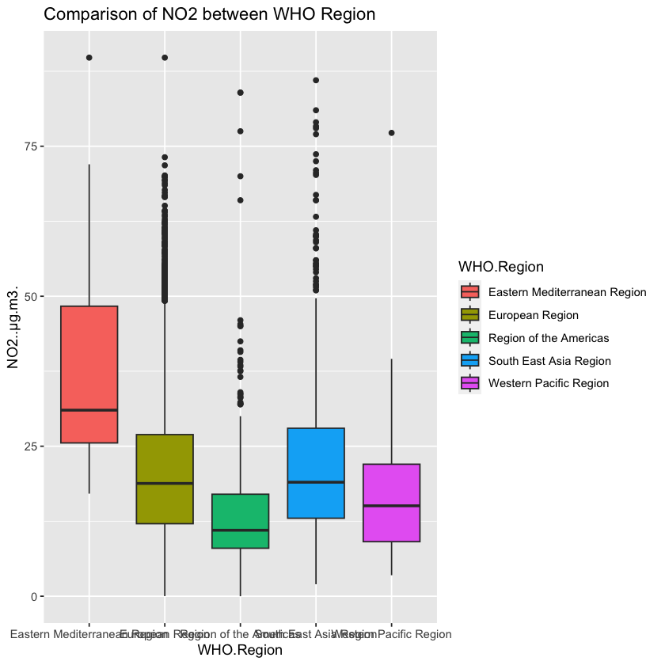
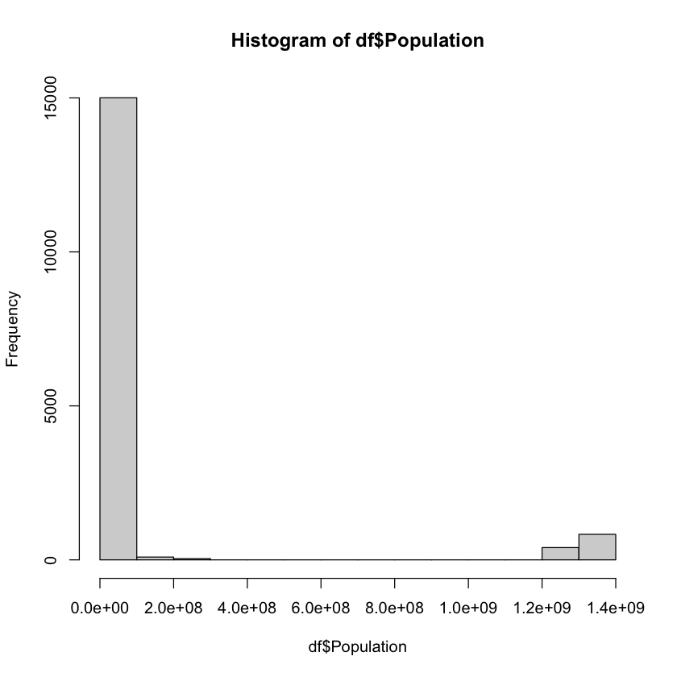
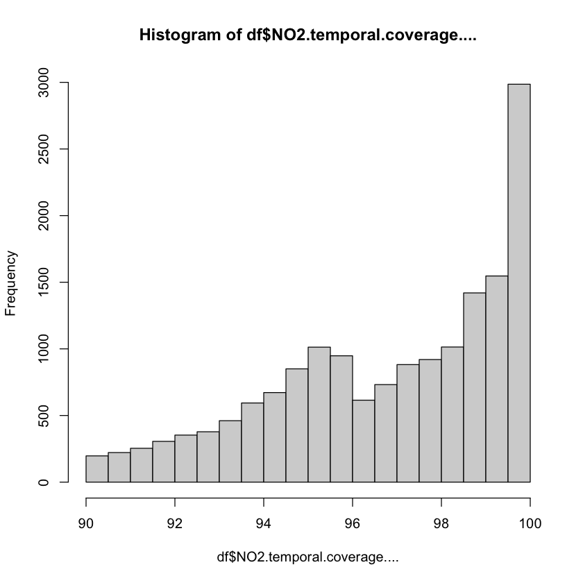

Does South East Asia Region have more NO2 emissions than the European Region in 2019?
df =read.csv('data_final.csv')print(head(df))
X WHO.Region ISO3 WHO.Country.Name City.or.Locality Measurement.Year
1 0 European Region ALB Albania Elbasan 2015
2 1 European Region ALB Albania Elbasan 2016
3 2 European Region AND Andorra Escaldes-Engordany 2012
4 3 European Region AND Andorra Escaldes-Engordany 2014
5 4 European Region AND Andorra Escaldes-Engordany 2015
6 5 European Region AND Andorra Escaldes-Engordany 2016
NO2..μg.m3. NO2.temporal.coverage.... Population Average.NO2
1 23.96 97.85388 2880703 23.96
2 26.26 96.04964 2876101 26.26
3 31.64 100.00000 71013 31.64
4 27.62 100.00000 71621 27.62
5 26.65 94.55479 71746 26.65
6 26.98 94.96812 72540 26.98
summary(df)
X WHO.Region ISO3 WHO.Country.Name
Min. : 0 Length:16364 Length:16364 Length:16364
1st Qu.: 4091 Class :character Class :character Class :character
Median : 8182 Mode :character Mode :character Mode :character
Mean : 8182
3rd Qu.:12272
Max. :16363
City.or.Locality Measurement.Year NO2..μg.m3. NO2.temporal.coverage....
Length:16364 Min. :2010 Min. : 0.00 Min. : 90.01
Class :character 1st Qu.:2014 1st Qu.:11.86 1st Qu.: 94.93
Mode :character Median :2016 Median :18.50 Median : 97.35
Mean :2016 Mean :20.12 Mean : 96.80
3rd Qu.:2018 3rd Qu.:26.71 3rd Qu.: 99.13
Max. :2021 Max. :89.77 Max. :100.00
Population Average.NO2
Min. :3.703e+04 Min. : 1.08
1st Qu.:1.959e+07 1st Qu.:16.99
Median :5.973e+07 Median :20.02
Mean :1.434e+08 Mean :20.12
3rd Qu.:6.716e+07 3rd Qu.:23.06
Max. :1.383e+09 Max. :59.82
library(dplyr)# Balancing data choosing countries with data for years 2010, 2016, 2017, and 2018years_to_keep <-c(2010, 2016, 2017, 2018)# balanced datayears_to_keep <-c(2010, 2014, 2015, 2016, 2017, 2018)# Filter the data framefiltered_df <- df %>%group_by(WHO.Country.Name) %>%filter(all(years_to_keep %in% Measurement.Year))# Display the filtered data frameprint(head(filtered_df))
Attaching package: ‘dplyr’
The following objects are masked from ‘package:stats’:
filter, lag
The following objects are masked from ‘package:base’:
intersect, setdiff, setequal, union
# A tibble: 6 × 10
# Groups: WHO.Country.Name [1]
X WHO.Region ISO3 WHO.Country.Name City.or.Locality Measurement.Year
<int> <chr> <chr> <chr> <chr> <int>
1 48 European Region AUT Austria Am Rechen 2013
2 49 European Region AUT Austria Amstetten 2013
3 50 European Region AUT Austria Bad Vöslau 2013
4 51 European Region AUT Austria Biedermannsdorf 2013
5 52 European Region AUT Austria Bludenz 2013
6 53 European Region AUT Austria Bratislava 2013
# ℹ 4 more variables: NO2..μg.m3. <dbl>, NO2.temporal.coverage.... <dbl>,
# Population <dbl>, Average.NO2 <dbl>
library(ggplot2)print(names(df))#hist(df$NO2....g.m3.)df %>%ggplot( aes(x = WHO.Region, y = NO2..μg.m3., fill=WHO.Region)) +geom_boxplot() +ggtitle("Comparison of NO2 between WHO Region")hist(df$Population)hist(df$NO2.temporal.coverage....)
Warning message in grid.Call(C_textBounds, as.graphicsAnnot(x$label), x$x, x$y, :
“conversion failure on 'NO2..μg.m3.' in 'mbcsToSbcs': dot substituted for <ce>”
Warning message in grid.Call(C_textBounds, as.graphicsAnnot(x$label), x$x, x$y, :
“conversion failure on 'NO2..μg.m3.' in 'mbcsToSbcs': dot substituted for <bc>”
Warning message in grid.Call(C_textBounds, as.graphicsAnnot(x$label), x$x, x$y, :
“conversion failure on 'NO2..μg.m3.' in 'mbcsToSbcs': dot substituted for <ce>”
Warning message in grid.Call(C_textBounds, as.graphicsAnnot(x$label), x$x, x$y, :
“conversion failure on 'NO2..μg.m3.' in 'mbcsToSbcs': dot substituted for <bc>”
Warning message in grid.Call(C_textBounds, as.graphicsAnnot(x$label), x$x, x$y, :
“conversion failure on 'NO2..μg.m3.' in 'mbcsToSbcs': dot substituted for <ce>”
Warning message in grid.Call(C_textBounds, as.graphicsAnnot(x$label), x$x, x$y, :
“conversion failure on 'NO2..μg.m3.' in 'mbcsToSbcs': dot substituted for <bc>”
Warning message in grid.Call(C_textBounds, as.graphicsAnnot(x$label), x$x, x$y, :
“conversion failure on 'NO2..μg.m3.' in 'mbcsToSbcs': dot substituted for <ce>”
Warning message in grid.Call(C_textBounds, as.graphicsAnnot(x$label), x$x, x$y, :
“conversion failure on 'NO2..μg.m3.' in 'mbcsToSbcs': dot substituted for <bc>”
Warning message in grid.Call(C_textBounds, as.graphicsAnnot(x$label), x$x, x$y, :
“conversion failure on 'NO2..μg.m3.' in 'mbcsToSbcs': dot substituted for <ce>”
Warning message in grid.Call(C_textBounds, as.graphicsAnnot(x$label), x$x, x$y, :
“conversion failure on 'NO2..μg.m3.' in 'mbcsToSbcs': dot substituted for <bc>”
Warning message in grid.Call(C_textBounds, as.graphicsAnnot(x$label), x$x, x$y, :
“conversion failure on 'NO2..μg.m3.' in 'mbcsToSbcs': dot substituted for <ce>”
Warning message in grid.Call(C_textBounds, as.graphicsAnnot(x$label), x$x, x$y, :
“conversion failure on 'NO2..μg.m3.' in 'mbcsToSbcs': dot substituted for <bc>”
Warning message in grid.Call(C_textBounds, as.graphicsAnnot(x$label), x$x, x$y, :
“conversion failure on 'NO2..μg.m3.' in 'mbcsToSbcs': dot substituted for <ce>”
Warning message in grid.Call(C_textBounds, as.graphicsAnnot(x$label), x$x, x$y, :
“conversion failure on 'NO2..μg.m3.' in 'mbcsToSbcs': dot substituted for <bc>”
Warning message in grid.Call.graphics(C_text, as.graphicsAnnot(x$label), x$x, x$y, :
“conversion failure on 'NO2..μg.m3.' in 'mbcsToSbcs': dot substituted for <ce>”
Warning message in grid.Call.graphics(C_text, as.graphicsAnnot(x$label), x$x, x$y, :
“conversion failure on 'NO2..μg.m3.' in 'mbcsToSbcs': dot substituted for <bc>”



df1 <-subset(df, select=c(Measurement.Year, WHO.Country.Name))df2 <- df1[order(df1$Measurement.Year), ]df2table <-table(df1)# Create a new data frame with counts for each combination of Year and Countrycount_df <- df1 %>%group_by(Measurement.Year, WHO.Country.Name) %>%summarize(Frequency =n())# Display the resulting data frameprint(count_df)count_df[count_df$WHO.Country.Name=="Korea",]
A data.frame: 16364 × 2
Measurement.Year
WHO.Country.Name
<int>
<chr>
779
2010
Austria
780
2010
Austria
781
2010
Austria
782
2010
Austria
783
2010
Austria
784
2010
Austria
785
2010
Austria
786
2010
Austria
787
2010
Austria
788
2010
Austria
789
2010
Austria
790
2010
Austria
791
2010
Austria
792
2010
Austria
793
2010
Austria
794
2010
Austria
795
2010
Austria
796
2010
Austria
797
2010
Austria
798
2010
Austria
799
2010
Austria
800
2010
Austria
801
2010
Austria
802
2010
Austria
803
2010
Austria
804
2010
Austria
805
2010
Austria
806
2010
Austria
807
2010
Austria
808
2010
Austria
⋮
⋮
⋮
16328
2019
Sweden
16329
2019
Sweden
16330
2019
Sweden
16331
2019
Sweden
16332
2019
Sweden
16333
2019
Sweden
16334
2019
Sweden
16350
2019
Thailand
16351
2019
Thailand
16352
2019
Thailand
16353
2019
Thailand
16354
2019
Thailand
16355
2019
Thailand
16356
2019
Thailand
16357
2019
Thailand
16358
2019
Thailand
16359
2019
Thailand
16360
2019
Thailand
16361
2019
Thailand
16362
2019
Thailand
16363
2019
Thailand
16364
2019
Thailand
13985
2020
Kuwait
13986
2020
Kuwait
13987
2020
Kuwait
13988
2020
Kuwait
13989
2020
Kuwait
15772
2020
Qatar
15986
2020
Singapore
15773
2021
Qatar
`summarise()` has grouped output by 'Measurement.Year'. You can override using
the `.groups` argument.
# A tibble: 344 × 3
# Groups: Measurement.Year [12]
Measurement.Year WHO.Country.Name Frequency
<int> <chr> <int>
1 2010 Austria 103
2 2010 Belgium 41
3 2010 Bulgaria 16
4 2010 Croatia 4
5 2010 Cyprus 2
6 2010 Czechia 59
7 2010 Denmark 4
8 2010 Estonia 7
9 2010 Finland 18
10 2010 France 304
# ℹ 334 more rows
A grouped_df: 0 × 3
Measurement.Year
WHO.Country.Name
Frequency
<int>
<chr>
<int>
df_region <-subset(df, select=c(Measurement.Year, WHO.Region))# Create a new data frame with counts for each combination of Year and Countrydf_region <- df_region %>%group_by(Measurement.Year, WHO.Region) %>%summarize(Frequency =n())# Display the resulting data frameprint(df_region)
`summarise()` has grouped output by 'Measurement.Year'. You can override using
the `.groups` argument.
# A tibble: 48 × 3
# Groups: Measurement.Year [12]
Measurement.Year WHO.Region Frequency
<int> <chr> <int>
1 2010 European Region 1685
2 2010 Region of the Americas 5
3 2010 South East Asia Region 80
4 2010 Western Pacific Region 1
5 2011 European Region 1
6 2011 Region of the Americas 7
7 2011 South East Asia Region 94
8 2011 Western Pacific Region 1
9 2012 European Region 1
10 2012 Region of the Americas 6
# ℹ 38 more rows
EUR vs. SEA
sea <-subset(df, select=NO2..μg.m3.,subset=WHO.Region=="South East Asia Region", drop=T)eur <-subset(df, select=NO2..μg.m3.,subset=WHO.Region=="European Region", drop=T)t.test(sea, eur, alt="greater")
Welch Two Sample t-test
data: sea and eur
t = 4.131, df = 1437.9, p-value = 1.91e-05
alternative hypothesis: true difference in means is greater than 0
95 percent confidence interval:
0.9076531 Inf
sample estimates:
mean of x mean of y
21.79245 20.28364
INCUDE IN FINAL PROJECT AND PRESENTATION
Fail to reject the null hypothesis: The NO2 emissions in the South East Asia Region and European Region are similar.
Reject the null hypothesis or alternative hypothesis: The NO2 emissions in the South East Asia Region is greater than in the European Region.
df2019 <- df[df$Measurement.Year==2019, ]sea2 <-subset(df2019, select=NO2..μg.m3.,subset=WHO.Region=="South East Asia Region", drop=T)eur2 <-subset(df2019, select=NO2..μg.m3.,subset=WHO.Region=="European Region", drop=T)t.test(sea2, eur2, alt="greater")
Welch Two Sample t-test
data: sea2 and eur2
t = 6.1356, df = 246.22, p-value = 1.682e-09
alternative hypothesis: true difference in means is greater than 0
95 percent confidence interval:
4.023139 Inf
sample estimates:
mean of x mean of y
23.53045 18.02611
EUR vs. SEA in 2019 repeating test with Average NO2
sea2 <-subset(df2019, select=Average.NO2,subset=WHO.Region=="South East Asia Region", drop=T)eur2 <-subset(df2019, select=Average.NO2,subset=WHO.Region=="European Region", drop=T)t.test(sea2, eur2, alt="greater")
Welch Two Sample t-test
data: sea2 and eur2
t = 50.121, df = 559.63, p-value < 2.2e-16
alternative hypothesis: true difference in means is greater than 0
95 percent confidence interval:
5.323403 Inf
sample estimates:
mean of x mean of y
23.53045 18.02611
INCLUDE IN FINAL PROJECT
Additionally, a bootstrap test is performed for ratio of means of “NO2.” The 95% bootstrap percentile interval for the ratio of means is (0.6566061 1.7743924). The estimated bias is 0.03308387. The bootstrap tests also shows there is 95% confidence in the alternative hypothesis.
Note: adjust and control for years
sea3 <- df2019[df2019$WHO.Region =="South East Asia Region", ]eur3 <- df2019[df2019$WHO.Region =="European Region", ]N <-100000ratiomeans<-numeric(N)for (i in1:N){ sea_sample <-sample(df$NO2..μg.m3.[df$WHO.Region =='South East Asia Region'], length(sea3), replace =TRUE) eur_sample <-sample(df$NO2..μg.m3.[df$WHO.Region =='European Region'], length(eur3), replace =TRUE) ratiomeans[i] <-mean(sea_sample)/mean(eur_sample)}quantile(ratiomeans, c(0.025, 0.975))
2.5%
0.657529053899664
97.5%
1.7848090119701
Calculate bias
sea_mean <-mean(df$NO2..μg.m3.[df$WHO.Region =='South East Asia Region'])eur_mean <-mean(df$NO2..μg.m3.[df$WHO.Region =='European Region'])ratio_actual <- sea_mean/eur_mean(bias=mean(ratiomeans)-mean(ratio_actual)) #estimated bias
0.0361308595682204
According to the existing WHO air quality guidelines, an annual average indoor nitrogen dioxide guideline of 40 μg/m3 is recommended. In the WHO dataset, a new column was added labeling NO2 above and within 40 μg/m3. Chi-squared test is performed to assess
Fail to reject the null hypothesis: The compliance with recommended NO2 of regions are independent. The compliance with recommended NO2 between the regions are not different.
Reject the null hypothesis or alternative hypothesis: The compliance with recommended NO2 are dependent on the region. The compliance with recommended NO2 are different between regions.
“An annual average indoor nitrogen dioxide guideline of 40 μg/m3, consistent with the existing WHO air quality guideline, is recommended.” https://www.ncbi.nlm.nih.gov/books/NBK138707/
X WHO.Region ISO3 WHO.Country.Name City.or.Locality Measurement.Year
1 0 European Region ALB Albania Elbasan 2015
2 1 European Region ALB Albania Elbasan 2016
3 2 European Region AND Andorra Escaldes-Engordany 2012
4 3 European Region AND Andorra Escaldes-Engordany 2014
5 4 European Region AND Andorra Escaldes-Engordany 2015
6 5 European Region AND Andorra Escaldes-Engordany 2016
NO2..μg.m3. NO2.temporal.coverage.... Population Average.NO2 WHO.Guideline
1 23.96 97.85388 2880703 23.96 within
2 26.26 96.04964 2876101 26.26 within
3 31.64 100.00000 71013 31.64 within
4 27.62 100.00000 71621 27.62 within
5 26.65 94.55479 71746 26.65 within
6 26.98 94.96812 72540 26.98 within
above within
Eastern Mediterranean Region 15 24
European Region 708 13548
Region of the Americas 11 724
South East Asia Region 94 1163
Western Pacific Region 1 76
Warning message in chisq.test(tableRegion):
“Chi-squared approximation may be incorrect”
Welch Two Sample t-test
data: germany1 and france1
t = 13.789, df = 4102.1, p-value < 2.2e-16
alternative hypothesis: true difference in means is greater than 0
95 percent confidence interval:
4.432918 Inf
sample estimates:
mean of x mean of y
24.40787 19.37438
Welch Two Sample t-test
data: france2 and germany2
t = -2.5762, df = 515, p-value = 0.005133
alternative hypothesis: true difference in means is less than 0
95 percent confidence interval:
-Inf -0.93656
sample estimates:
mean of x mean of y
22.95500 25.55385
Welch Two Sample t-test
data: germany3 and france3
t = 626.53, df = 3886.2, p-value < 2.2e-16
alternative hypothesis: true difference in means is greater than 0
95 percent confidence interval:
15456597 Inf
sample estimates:
mean of x mean of y
82106500 66609208
Welch Two Sample t-test
data: germany2018 and germany2016
t = -1.2248, df = 633.34, p-value = 0.1105
alternative hypothesis: true difference in means is less than 0
95 percent confidence interval:
-Inf 0.4343129
sample estimates:
mean of x mean of y
23.77388 25.03314
Welch Two Sample t-test
data: france2016 and france2010
t = -4.3778, df = 597.82, p-value = 7.075e-06
alternative hypothesis: true difference in means is less than 0
95 percent confidence interval:
-Inf -2.275993
sample estimates:
mean of x mean of y
19.30578 22.95500
2a. INCLUDE IN FINAL PRESENTATION AND PROJECT
Given that South East Asian has greater NO2 emissions than Europe, additional testing was performed on France and India.
Does France have less NO2 emissions in 2016 than in 2010?
A bootstrap test is performed for ratio of means of “NO2.” The 95% bootstrap percentile interval for the ratio of means is (0.6566061 1.7743924). The estimated bias is approximately 0.03. The bootstrap tests also shows there is 95% confidence in the alternative hypothesis.
Yes, France has decreased their NO2 emissions in 2016.
Welch Two Sample t-test
data: germany2019 and germany2013
t = -6.4465, df = 300.88, p-value = 2.273e-10
alternative hypothesis: true difference in means is less than 0
95 percent confidence interval:
-Inf -6.066074
sample estimates:
mean of x mean of y
21.66151 29.81421
2b. INCLUDE IN FINAL PROJECT AND PRESENTATION ## Does India have less NO2 emissions in 2018 than in 2014? After performing a t-test, the p-value was slightly greater than 0.05, which fails to reject the null hypothesis.
Welch Two Sample t-test
data: india2018 and india2014
t = -1.5742, df = 630.54, p-value = 0.05797
alternative hypothesis: true difference in means is less than 0
95 percent confidence interval:
-Inf 0.07603958
sample estimates:
mean of x mean of y
23.77388 25.41283
INCLUDE IN PRESENTATION
Is global NO2 dependent on Year?
According to the existing WHO air quality guidelines, an annual average indoor nitrogen dioxide guideline of 40 μg/m3 is recommended. In the WHO dataset, a new column was added labeling NO2 above and within 40 μg/m3. Chi-squared test is performed to assess if compliance with recommended NO2 is dependent on year in the subset.
Fail to reject the null hypothesis: The compliance with recommended NO2 are independent from years. The compliance with recommended NO2 does not differ between years.
Reject the null hypothesis or alternative hypothesis: The compliance with recommended NO2 are dependent on the year. The compliance with recommended NO2 differs between the years.
The Chi-squared test result in p-value < 2.2e-16, confirming the alternative hypothesis. Therefore, compliance with recommended NO2 differs between the years.
“An annual average indoor nitrogen dioxide guideline of 40 μg/m3, consistent with the existing WHO air quality guideline, is recommended.” https://www.ncbi.nlm.nih.gov/books/NBK138707/
To take a closer look a subset was limited to India, Germany, and France in between the date range of 2013 to 2019.
According to the existing WHO air quality guidelines, an annual average indoor nitrogen dioxide guideline of 40 μg/m3 is recommended. In the WHO dataset, a new column was added labeling NO2 above and within 40 μg/m3. Chi-squared test is performed to assess if compliance with recommended NO2 is dependent on year in the subset.
Fail to reject the null hypothesis: The compliance with recommended NO2 are independent from years. The compliance with recommended NO2 does not differ between years.
Reject the null hypothesis or alternative hypothesis: The compliance with recommended NO2 are dependent on the year. The compliance with recommended NO2 differs between the years.
“An annual average indoor nitrogen dioxide guideline of 40 μg/m3, consistent with the existing WHO air quality guideline, is recommended.” https://www.ncbi.nlm.nih.gov/books/NBK138707/